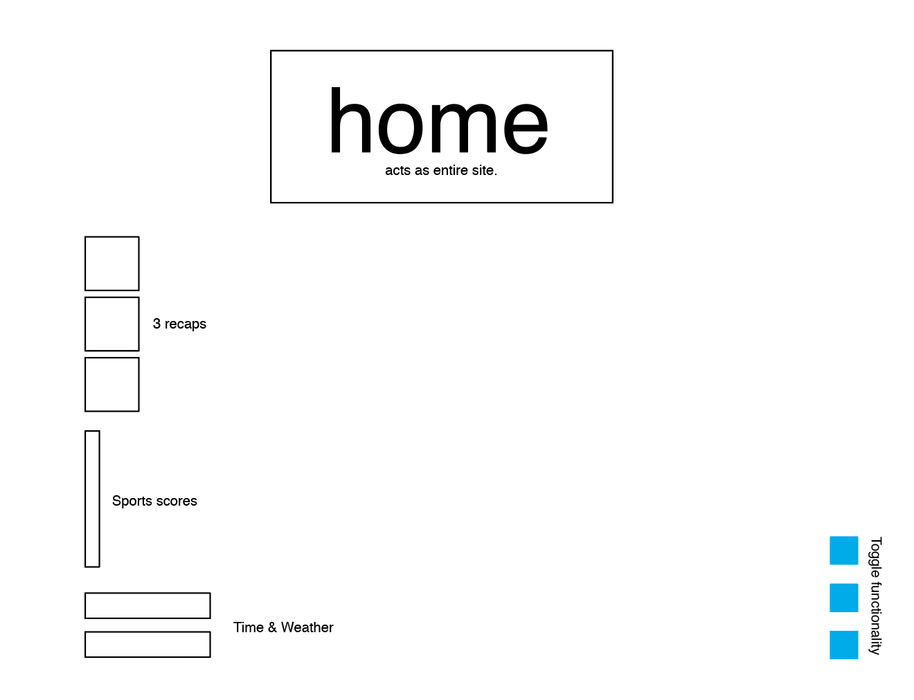

Griffin
- Black background
- White lettering — Less words
- Spoken words
- Option for non-siri voices
- Standard shapes surrounded by black
- High Contrast
- The less instruction needed the better
- National Federation of the Blind Newsline - A free dial in service for the blind that allows news stories to be read to them.
- issue with this is that you have to listen to the full story and it takes a while to navigate through.
- What is actually needed? A desktop site that combines top news storys(summaries) with weather conditions and time.
- TIME IS ALWAYS NEEDED
Pam
- Buttons on web for easy swipe through(so accessibility picks them up as objects)
- Images are generally not needed unless they are thouroughly needed
- Hover states are actually helpful for finding objects on page
- When asked about the news: Talking points would be appreciated - since we can't "read" the paper, it would be good to have a rundown of current events.
- More practical sites that cater to what will help our DAILY LIVES
Jake Olson
- Sports scores! Typical news site but without physical words.
- Hates siris voice
- Consider that some people are fully blind so wont be able to see anything
- Target high contrast, as the most amount of people have higher chances with it.
- Nothing should be lost
- Throw out any idea of multiple pages. Navigation backwards trips people up.
Conclusion
- Current events, sports, emergency weather alerts
- Visually impaired can see without accessibility mode. Fully sighted will have an easier chance viewing with accessibility mode on.
Content:
- Current Events: Rotating — Politics, sports, art & culture — 3 summaries
- Middle content..?!
- Weather and Time always viewable.
- NO IMAGERY
Questions:
- Option for different voices?
- How to show text in accessibility mode for fully sighted without it being a very light color
- Should items be centered?
- Does the site also work as an experiment? What it's like to use accessibility mode?
- Is there a tagline spoken for the branding instead of logo? Does logo only appear on sighted version?
